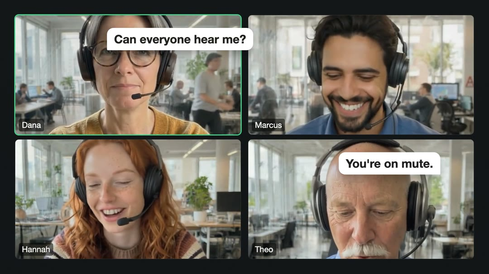
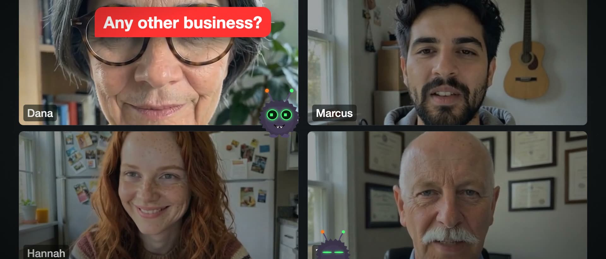

A Christmas video of your team
Your colleagues as A Christmas Carol: their own photos in costume and moving, the jokes from your team chat, an original carol. Ninety seconds, about $2.
Why it lands
The videos that land hardest are the ones where the audience knows the people. A Christmas ad of your own team, where the person who always books one more meeting is Scrooge and the ghosts are the colleagues who were there for the year, gets laughs no stock video can.
The toolkit's parody-short skill is how Claude Code makes one. It was built on three videos for one team, then on two public shorts with an invented cast, shown here. The team videos stay private because they star real colleagues.


Ask for it
You need Claude Code and the toolkit, a Modal account for the image and video models (the toolkit deploys them for you), a free ACE-Step key for the carol, three to six people with a photo of each, and each person's OK to appear in it.
Then tell Claude Code what you want, in your own words.
Make a 90-second Christmas TV ad of my team as A Christmas Carol.
Cast: Sam (Scrooge, books meetings on Christmas Eve), Priya, Jonas, Ana.
Their photos are in ~/Desktop/team. It's for our end-of-year call,
so facts don't matter: exaggerate freely.What Claude Code does
- Brief. The event, the cast, and one question early: do facts matter? Say no, and nobody fact-checks a joke.
- In-jokes. With a chat connector it reads your public channels for catchphrases and running jokes. DMs are never quoted.
- The story. A Christmas Carol is public domain: Scrooge, Marley's chains, three ghosts, the change of heart. One beat per person.
- Costume and animate. Each photo is costumed with an image edit and animated with LTX. Every clip goes on a contact sheet first; about one in three is re-rolled.
- Build. Remotion shots in the Dickens look, with all the text drawn by Remotion.
- Sound. An original carol written for your team, bells and chains, each sound placed by measurement.
- Check. Loudness, frozen clips and sound cues, measured; then the rules below again.

The rules that keep it fun
- Affectionate, always. Everyone is the hero of a gag or in on it. Nothing about performance, health, personal life or anything said in confidence.
- Real faces stay internal. Share it with the team, link-only. Ask each person before posting anywhere public, and leave out anyone who asks.
- Nothing sensitive on screen. No customer names, hostnames, internal URLs or secrets.
- Original words and music. Dickens is public domain; a film's characters, lines or theme tune are not.
| Costume edit | about $0.01 each |
| Five-second LTX clip | about $0.08 each |
| Background image | about $0.01 each |
| The carol | a few cents |
| A 90-second ad, five people, with re-rolls | about $2 |
Not Christmas?
The same skill does an 80s action-show intro of a release night, a creature feature for Halloween, a nature documentary of the office, or a heist movie of a quarter-end deal. Reuse the costumed cast for the next one: only the costumes, clips and world change.
